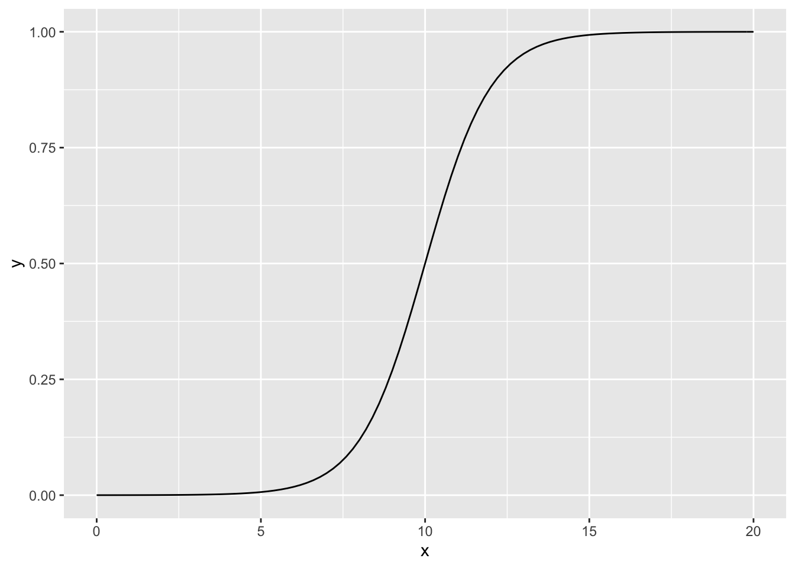

Data Science from Scratch Code
2022-05-21
Chapter 1 Computer Set-Up
When building projects efficiently, you will need different set-ups in order to have everything in your code work properly, not only on your own machine, but also on other machines, for example of another team-member.
1.1 Mac Tricks
Before we start with the whole set-up, you will also need to know how to work more efficiently with your Macbook-Computer.
Those “tricks” will be useful for many other programs you will need when working in the field of datascience.
1.1.1 Öffne die Developer-Tools von Google-Chrome
command + shift + i
1.1.2 Speichern
command + s
1.1.3 Speichern Unter
shift + option + command + s
1.1.4 Finder
command + leerschlag
1.1.5 Programm schliessen
command + q
1.1.6 Neuer Ordner
shift + command + n
1.1.7 Tilde Zeichen
Das ist nützlich für shortcuts im Terminal, wenn man das Working Directory festlegt:
option + n
1.1.8 Backslash
Useful for paths within the Directory:
option + shift + 7
1.1.9 Screenshot vom Bildschirm
command + shift + 3
1.1.10 Teil des Bildschirms Screen-Schoten
shift + command + 4
1.1.11 Verlauf löschen in Chrome Browser
shift + command + entfernen
1.1.12 Verlauf löschen Safari
command + alt + e
1.1.13 Bildschirm Aufnahme
Funktioniert nur, wenn QuickTime Player aktiv ist:
option + command + n
1.1.14 Lesezeichen in Google Chrome
command + d
1.1.15 Search Console Pop Up
option + command + j
1.1.16 Format Kopieren einer Zelle (in Numbers)
option + command + c
1.1.17 Format übertragen einer Zelle (in Numbers)
option + command + v
1.1.18 Switch between Applications on your computer
command + tab
1.1.19 Move Forward through Tabs
control + tab
1.1.20 Zahl als Exponent
Geht nur in Pages oder Tablett!:
shift + control + command + „+“-Zeichen WÄHREND man die Zahl mit der Maus markiert
Dann ist sie noch „normal“ und nicht tiefgestellt —> also so: zum Beispiel: 2.
1.1.21 Source-Code einer Webseite aufschalten
Option + CMD + u im Browser drücken
1.1.22 Interaktive Code-Ansicht für das Abchecken von Webseiten
fn + F12-Taste auf Touch Bar drücken
1.1.23 Approximate Symbol ≈
option + x
1.2 Virtual Environment
Because the libraries you work with in your projects will be updated over time (this is generally bad news, since this will cause all sorts of dependency problems across your libaries you use), it is crucial to understand that you will need a virtual environment (venv). There, you will install all the libraries you need. The major advantage here, is that you can control the version you install the library. Furthermore, you can send the venv to another computer and the people will download exactly the versions of each library.
This allows that your code will always work, independently of the machine you will use! There will be no dependency problems anymore, which is a huge win.. :)
1.2.1 Create a venv
Go to your terminal and plug in the following code:
conda create -n YOUR-VENVIRONMENT-NAME-HERE python=3.61.2.2 Activate your newly created venv
Weirdly though, you also need to activate the environment you created above. Plug in the following code:
source activate YOUR-ENVIRONMENT-NAMENote that the code above can also be used to activate virtual environments you created in the past! =)
1.2.3 Install packages
Now that you are in your new venv, you can start downloading some packages:
python -m pip install SOME-PACKAGES1.2.4 Overview of packages
To check your packages within your venv, simply type:
conda list1.2.5 Overview of every venv
To check all the venv I created, simply type:
conda env list1.2.6 Execute any python skript
In order to execute a Python-script, you will need to head towards the directory that the .py-file is and - then - type in:
cd go-to-the-dir-where-your-file-is
python my-script.py1.2.7 Deactivate the venv
After you have completed what you wanted, you will need to shut-down the venv. Simply type:
conda deactivate1.2.8 Delete a venv
Simply type:
conda env remove -n my-new-env1.3 How to efficiently manage a Project?
In today’s world, it is from utmost importance to be able to explain & document your work, otherwise you cannot convince your managers / higher-ups of your work.
Ideally, your documentation should be done in an environment that can be accessed anywhere! And what better tool nowadays than a website, since everyone has access to a computer with a browser today! =)
1.3.1 Create a Website on Github (for free)
- Für mich: https://www.youtube.com/watch?v=xt3-JgAxWgE
- For visitors, I recommend you to watch this tutorial: https://www.youtube.com/watch?v=m5D-yoH416Y
1.3.2 R Markdown Syntax
Es folgt eine Zusammenfassung der wichtigsten Markdown-Sytnax, damit ich schnell gute Anleitungen & Tutorials für jegliche Themen meiner Wahl verfassen kann.
1.3.2.1 Headers
Headers sind die <h1> bis <h6> in der HTML-Sprache. Diese werden hier mit Hashtags # geschrieben. Es gibt folgende Möglichkeiten:
# H1
## H2
### H3
#### H4
##### H5
###### H6
Alternatively, for H1 and H2, an underline-ish style:
Alt-H1
======
Alt-H2
------1.3.2.2 Wichtige Textausschnitte markieren
Wenn ein Autor einen Text verfasst, dann kann es sehr hilfreich für einen Leser sein, wenn die Hauptbotschaften hervorgehoben werden. Es gibt in Markdown grundsätzlich sieben Wege, um dies zu tun:
Italics, aka kursiv, mit *asterisks* or _underscores_.
Fettgedruckt, aka bold, mit **asterisks** or __underscores__.
Kombiniere fett & kursiv mit **asterisks and _underscores_**.
Wörter unterstreichen mit HTML-Tag <u>dies ist wichtig</u>!
Durchgestrichen mit zwei tildes. ~~Scratch this.~~ (= drücke Option + n)
Codes hervorheben mit Appostroph. `<h1>` (= drücke shift + ^-Taste)
Ganze Code-Chunks mit drei Appostrophs. ```noob```Als Output, sieht es so aus:
- Fettgedruckte Wörter
- Italics, dh kursiv
- Kombination aus fettgedrucktem und kursiv.
- Dies ist nicht korrekt gelöst!
- Du bisch
en spasst, just kiddin du Esel ;) - Codes im Text hervorheben, also zum Beispiel
<h1>. - Sogenannte Code-Chunks, wie oben verwendet, braucht einen neue Zeile, also:
This is a Code Chunk, where you can write your R-Code, for example.1.3.2.3 Listen
Oftmals ist es von Vorteil, wenn jeder Schritt einer Erklärung oder Anleitung mit Hilfe von Listenpunkten heruntergebrochen wird. Ein Mensch versteht dann viel besser, was er zu tun hat, wenn er etwas Neues / zum ersten Mal macht.
Wie du es bereits aus HTML kennst, gibt es sogenannte Unordered Lists (HTML-Code wäre ul) oder odered Lists (HTML-Code wäre ol). Ausserdem können Listen innerhalb von Listen erstellt werden, wenn ein Arbeitsschritt noch weiter heruntergebrochen werden kann:
1. Erstes Element einer Ordered List, aka das erste <li></li> im HTML-Code.
2. Zweites Element einer Ordered List, aka das zweite <li></li> im HTML-Code.
* Unordered sub-list. ACHTUNG: Drücke 2-mal auf die Tab-Taste, sonst wird keine Einrückung gemacht!
1. Bemerke, dass ich hier absichtlich wieder bei "1" beginne, weil ich dir zeigen will: Actual numbers don't matter, just that it's a number
1. Ordered sub-list
2. Vierter Listenpunkt.
Alternative für Unordered Lists:
* Unordered list can use asterisks
- Or minuses
+ Or pluses- Erstes Element einer Ordered List, aka das erste
<li></li>im HTML-Code. - Zweites Element einer Ordered List, aka das zweite
<li></li>im HTML-Code.- Unordered Sub-List. ACHTUNG: Man muss 2-mal auf die Tab-Taste drücken, sonst wird keine Einrückung gemacht!
- Bemerke, dass ich hier absichtlich wieder eine “1” im Code schreibe, weil ich dir zeigen will, dass die ordered List mit einem
3)beginnen wird!- Ordered Sub-List. ACHTUNG: Auch hier muss man wieder 2-mal auf die Tab-Taste drücken, sonst wird keine Einrückung gemacht!
- Vierter Listenpunkt.
Alternative für Unordered-Lists:
- Unordered list mit der Asterisk-Schreibweise.
- Oder mit einem Minus-Zeichen.
- Oder mit einem Plus-Zeichen.
1.3.2.4 Hyperlinks
Häufig gibt es im Internet sehr gute Zusammenfassungen oder Konzepte, auf welche du referenzieren kannst, indem du einen Textausschnitt mit Hilfe von einem Hyperlink hervorhebst:
[Dies ist zum Beispiel die Zusammenfassung](https://github.com/adam-p/markdown-here/wiki/Markdown-Here-Cheatsheet#h4), auf welche ich mich basiere, um dir Markdown beizubringen.
Ich kann so auch - zum Beispiel - auf die [Webseite von Tee](https://www.audiophil-dreams.com/) verlinken. Dies ist zum Beispiel die Zusammenfassung, auf welche ich mich basiere, um dir Markdown beizubringen.
Ich kann so auch - zum Beispiel - auf die Webseite von Tee verlinken.
1.3.2.5 Bilder
Wenn jemand eine Erklärung erhält, ist es unentbehrlich, auch Bilder zu verwenden, denn Visualisierungen von Konzepten sind oftmals extrem nützlich, um eine Intuition / Verständnis für Neues zu entwickeln. Bei einer Anleitung können zum Beispiel Screenshots verwendet werden, um die schriftlichen Erklärungen mit Bilder effizient zu unterstützen. Es gibt grundsätzlich vier Arten, um Bilder in ein Markdown-Dokument einzufügen:
1) Bild aus Internet, "Inline-Style":

2) Bild aus Internet, "Reference-Style":
![alt text][logo_1]
[logo]: https://github.com/adam-p/markdown-here/raw/master/src/common/images/icon48.png
3) Bild aus Root-Directory (= Ordner, indem sich das R-Markdown-File 'ZF-Syntax' befindet), "Inline-Style":

4) Bild aus Root-Directory (= Ordner, indem sich das R-Markdown-File 'ZF-Syntax' befindet), "Reference-Style":
![alt text][logo_2]
[logo]: path-to-image-here
---
Bemerkung: "Reference-Style" ist sehr nützlich, insbesondere, weil du die References basically zuunterst in das R-Markdown Dokument einfügen kannst.Nehmen wir zunächst den Fall von einem Bild aus dem Internet:
- Die Inline-Methode ist einfach:

- Die Reference-Methode kann auch verwendet werden, um den gleichen Output zu generieren:
Als nächstes, nehmen wir ein Bild, welches von meinem eigenen Computer stammt. Ich hatte ich VTX eine Frage bezüglich meiner Domain geschrieben und musst Ihnen einen Screenshot einer meiner E-Mails angeben:
- Mit Inline-Methode:
- Mit Reference-Methode:
1.3.2.6 Tabellen
Für gewisse Konzepte, eignen sich Tabellen besonders gut, insbesondere wenn es um die übersichtliche Darstellung eines Konzeptes geht:
| Produkt | Beschreibung | Preis |
| ------------- |:-------------:| -----: |
| Focal Sopra | Lautsprecher | CHF 12'000 |
| Focal Chorus | Lautsprecher | CHF 1'200 |
| B&W 800 D3 | Lautsprecher | CHF 30'000 |
Alternativ kann auch mit weniger Zeichen gearbeitet werden, allerdings sieht die Tabelle - als Code - nicht besonders leserlich aus:
Markdown | Less | Pretty
--- | --- | ---
*Still* | `renders` | **nicely**
1 | 2 | 3Hier wäre die Muster-Tabelle für die Preise von Lautsprechern:
| Produkt | Beschreibung | Preis |
|---|---|---|
| Focal Sopra | Lautsprecher | CHF 12’000 |
| Focal Chorus | Lautsprecher | CHF 1’200 |
| B&W 800 D3 | Lautsprecher | CHF 30’000 |
Alternativ kann die gleiche Tabelle mit weniger Syntax erzielt werden:
| Produkt | Beschreibung | Preis |
|---|---|---|
| Focal Sopra | Lautsprecher |
CHF 12’000 |
| Focal Chorus | Lautsprecher |
CHF 1’200 |
| B&W 800 D3 | Lautsprecher |
CHF 30’000 |
Bemerkung: Man kann innerhalb der Tabelle die Textausschnitte weiterhin mit Markdown erweitern, also - beispielsweise - fettgedurckt oder kursiv schreiben.
1.3.2.7 Blockquotes
Zitate oder - in Emails - können Fragen der gegenüberstehenden Person besser hervorgehoben werden und tragen zum Verständnis bei:
> Herr Mayer, was sind die Vorteile des Optimize-Audio Konzeptes?
> "Comerades" isn't just a word. It refers to heart and believing in each other. - Mavis Herr Mayer, was sind die Vorteile des Optimize-Audio Konzeptes?
Sie profitieren von Synergie-Effekten, welche die Leistung einer Anlage qualitätsmässig vervielfacht.
“Regrets is a powerful poison. The more you harbor those feelings, the harder it is to move on.” Amamya
1.3.2.8 HTML in Markdown
Wie bereits in einem oberen Kapitel gesehen, lässt sich R Markdown auch mit einfachem HTML kombinieren:
<ul>
<li>Definition list</li>
<li>Is something people use sometimes.</li>
<li>Does *not* work very **well**. Use HTML <em>tags</em> instead.</li>
</ul>- Definition list
- Is something people use sometimes.
-
Sometimes, does not seem to work very well with normal
R Markdown. Use HTML tags instead.
1.3.2.9 Horizontale Linien
Um Themen voneinander abzugrenden und schöneres Layout zu haben, empfiehlt sich, mit Linien zu arbeiten, sobald ein neues Thema beginnt. Es gibt drei Möglichkeiten, um horizontale Linien einzubauen:
1) Verwende 3 Hyphens
---
2) Verwende 3 Asterisks
***
3) Verwende 3 Underscores
___
Hyphens
Asterisks
Underscores
1.3.2.10 Videos einfügen
In R Markdowngibt es keinen direkten Weg, um Videos direkt einzubetten. Am einfachsten geht es mittels HTML-Code, bei dem es grundsätzliche eine Möglichkeit gibt:
Füge ein Bild mit einem Link zum Video hinzu:
<a href="http://www.youtube.com/watch?feature=player_embedded&v=YOUTUBE_VIDEO_ID_HERE
" target="_blank"><img src="http://img.youtube.com/vi/YOUTUBE_VIDEO_ID_HERE/0.jpg"
alt="IMAGE ALT TEXT HERE" width="240" height="180" border="10" /></a>
- Mit der Bild-zum-Video-Methode erhalte ich:

1.3.2.11 LaTeX für mathematische Formeln
Es gibt die Möglichkeit, mittels der Programmiersprache LaTeX mathematische Formeln aufzuschreiben. Indem man das Dollarzeichen $ verwendet, versteht R Markdown, dass man die Sprache LaTeX verwendet:
- Für ein "Block-Element" - dh man beginnt auf einer neuen Zeile - verwendet man zwei Dollarzeichen:
$$\underbrace{z-score = \frac{\overbrace{x}^{observation}-\overbrace{\mu}^{population-mean}}{\underbrace{\sigma}_{population-sd}}}_{Standardisierungs-Formel}$$
- Für ein "Inline-Element", verwendet man nur ein Dollarzeichen:
Der Mittelwert wird oftmals als $\muh$ bezeichnet und die Varianz $\sigma$.- Beispiel für ein “Block-Element”:
\[\underbrace{z-score = \frac{\overbrace{x}^{observation}-\overbrace{\mu}^{population-mean}}{\underbrace{\sigma}_{population-sd}}}_{Standardisierungs-Formel}\]
- Illustration des “Inline-Elements”: Der Mittelwert wird oftmals als \(\mu\) bezeichnet und die Varianz \(\sigma\).
1.3.2.12 Code Chunks Inputs / Outputs anzeigen / verstecken mit Eval, Echo, Results
Bei Code Chunks, möchte man manchmal den Code absichtlich zeigen, aber manchmal auch - zum Beispiel - nur eine Graphik, ohne dass man den Code (= Input) sieht. Deshalb gibt es in RMarkdown diverse Befehle, die man als sogenannte Argumente (= Inputs) angeben kann:
Wenn man nur den Input-Code anzeigen will, jedoch nicht den dazugehörigen Output (= z.B. um den Code anzuzeigen, wie man ein Bild exportiert, aber dieses Bild nicht effektiv exportieren will), verwendet man das Argument
eval = FALSE.- Hier ein Beispiel anhand meines Masterarbeit-Codes, welchen ich nur zeigen, aber nicht runnen möchte:
###############
## Step 1: Preliminary basic steps
###### 1) Load some packages, set working directory and clear the workspace. ######
rm(list = ls()) # clear workspace
setwd("~/Uni/Masterstudium/Masterarbeit/final-code") # set wd
# load some packages:
library(dummies)
library(foreign)
library(stargazer) # important to create tables
library(readstata13) # important to load the ddset
library(haven)
library(plyr)# to use functions like count()
# Note: install.packages("readstata13") first before you can load them!Wenn man nur den Output des Codes zeigen möchte, aber nicht den dazugehörigen Input (= Code), dann verwendet man das Argument
echo = FALSE. Eventuell müssen auch nochmessage=FALSEundwarning=FALSEverwendet werden, falls zusätzliche Hinsweise beim evaluieren / runnen des Codes auftauchen (im unteren Beispiel ist dies der Fall!).- Hier ein Beispiel, bei dem ich nur die erstellte Graphik zeigen möchte:

Abschliessend gibt es noch den Fall, dass man weder den Input, noch den Output eines Code Chunks nicht zeigen möchte, aber der Code dennoch evaluiert wird. Dies tut man mittels des Arguments
results = hide&include = FALSE.- Beispielsweise hast du in deiner MA ganz viele male den Code
View = dataverwendet. Dadurch gibt es ein Fenster, welches durch Pop-Up auftaucht. Oftmals ist dies praktisch, wenn man nach bugs im Code sucht, aber schlussendlich sollten diese im Endergebnis nicht angezeigt werden. Hier verwende ich einfach basic Mathe, um dir zu zeigen, dass es funktioniert, obwohl ich einen Code Chunk imRMarkdown-Dokument eingefügt habe: no code shows!
- Beispielsweise hast du in deiner MA ganz viele male den Code
1.3.2.14 Code-Snippets
When writing Code, I recommend you to use .Rmd-Documents, which will allow you to combine both, text, as well as Code (in R, Python, or any other language of your choice).
Actually, this document is written in .Rmd-Files, where I combine the text, with so-called “code-snippets”, like the follwing:
This is a Code-SnippetWhen writing Code in R-Markdown, it will be useful for you to know when:
- to execute code wihtin a code-snippet
- and where not.
1.3.2.14.1 Hide Source Code
This will be done with echo = FALSE:
## [1] 2With figures, you need fig.show = 'hide' in R:
To hide warning-messages, just use message = FALSE:
1.3.2.14.2 Execute a Code-Chunk without showing any Output
You will get an output, e.g. the code will execute, but you will not show the code.
1.3.2.14.3 Do NOT execute a Code-Chunk
If you want to show code for demonstration purposes - like on this Website -
you will probably want to only show the code, but not execute it. This is also possible with eval=FALSE:
1.3.2.15 RMarkdown- VS. Markdown-Files
- Verwende
<ins></ins>als HTML, um Texte zu Unterstreichen.-
Achtung
: Der HTML-Tag
<u></u>geht nicht in.rm-files. Lustigerweise funktioniert<u></u>jedoch in.Rmd(= R Markdown) 😂
-
Achtung
: Der HTML-Tag
1.3.2.16 Nützliche Hexadecimals
- Hexadecimal code for the left square-bracket =
[–> Ich muss das so machen mit den eckigen Klammern, weil[]wird für Links & Bilder verwendet inMarkdown🤪 - Hexadecimal code for the right square-bracket =
]–> Ich muss das so machen mit den eckigen Klammern, weil[]wird für Links & Bilder verwendet inMarkdown🤪
1.4 Terminal-Commands:
A terminal will be essential for your projects, since you will - oftentimes - install packages or move files around your repositories with it. Here, you will find the most useful things you should know when using the Terminal.
1.4.1 Aktuelle Position // Directory?
For Mac:
pwd= print working directoryFor Windows:
dir= this is the same command aspwd, butdiris forWindows
1.4.2 Showing the child-directories inside the directory you are currently in?
ls= prints all thechild-directories(= one layer deeper of the path) from theparent-directory(= current directory you are in with your terminal) you are currently in.
1.4.3 Delete everything you wrote in your Terminal up until now?
clear= clears the terminal
1.4.4 Change directory?
cd= change directorycd ..= go back one directory.
1.4.5 Creating a new directory?
mkdir new-folder-1 new-folder-2 new-folder-3 = This creates 3 new folder within the current (working-) directory you are currently in.
1.4.6 Create a new file?
touch index.html app.css == This will create an index.html, as well as a app.css-file within the current (working-) directory you are currently in.
1.4.7 Remove files?
rm index.html app.css capture.png = This will delete the index.html-, the app.css and the capture.png-files from the current (working-) directory you are currently in.
1.4.8 Open the current directory you are in?
open .= opens the current directory you are in
1.4.9 Terminal Magic-Commands for being faster?
- Trick #1: hit the “Tab-Taste” == will automatically auto-fill the name of the file / directories etc.
- Example: Type
cd Dok+ “Tab”-Taste –> auto-fill activates –> im Terminal steht dann der automatisch ausgefüllte Name des Files / Directories, zum Beispielcd Dokumentebzw.cd Name_Of_Child_Directory
- Example: Type
- Trick #2: How to find a path of a directory that is situated very deeply in your local computer?
- Example: Type
cd+ drag-&-drop the folder that is deep in your computer with the file in it.
- Example: Type
1.4.10 Syntax im Terminal
*-Zeichen == Represents “all files”.
1.4.10.1 Beispiel: Delete all Files in a folder that start with the letter a?
To delete all files in a folder that start with the letter a, then you should write:
/folder/a*.-Zeichen == use the.character to represent the current folder.~-Zeichen == represents the “home directory”.
1.4.10.2 Beispiel: how to return to your home directory?
You should use:
cd ~1.5 How to activate & use Python?
Python can be executed on your local computer via a Jupyter Notebook, which can be accessed through an IDE. R, Visual Studio Code or PyCharm are examples of IDEs.
Let’s assume, that we took PyCharm as our IDE. We do the following steps:
- Use the
Terminalwithin PyCharm. - Once you opened the PyCharm-
Terminal, go to the directory that will be used for the Jupyter Notebook, by typing something ascd /some_folder_name. - Finally, type in
jupyter notebookin theTerminalto launch the Jupyter Notebook App. The notebook interface will appear in a new browser window or tab.
1.6 LaTeX
This bookdown is created via a .Rmd-File. For a Markdown to be able to read some mathematical formulas, we will need the LaTeX-language.
1.6.1 What is the LaTeX-Code for \(\hat{y}\)?
Simply type:
$\hat{y}$1.6.2 Useful Websites
- Frequent Formulas as LaTeX-Code: http://www.malinc.se/math/latex/basiccodeen.php#:~:text=The%20code%20%5Ctimes%20is%20used,never%20be%20negative%20by%20definition.
- LaTeX-Converter: http://www.sciweavers.org/free-online-latex-equation-editor
1.7 Wörterbuch
Jargon of a domain - like in Artificial Intelligence, Software Development or Economics - is one of the biggest challenges if you truly want tounderstand and master a new subject.
Scientists love to create sophisticated new words for new discoveries, methods or conclusions that they came to uncover in their respecitve fields. The problem with that, is that it acts as a huge market-barrier to those that want to enter the world many years later. You can see this even for “non-scientific” things, like the Pokemon franchise, that grow from 150 Pokemon to almost 1’000 Pokemons. The problem is, that the audience does not nearly grow as much, as in the beginning and that the new generation is not so enthousiastic about it, partly because the field has become too large for noobies.
That’s why it is form utmost importance to know each field’s jargon. I firmly believe that it is one of the biggest chalenges to overcome in order to be good at something. Because when you are able to “decode” the jargon, you can start “understand” the things. And when you understand, you can start applying, and that is where the fun truly begins!
And this is why you will almost find a “Wörterbuch”-sub-chapter in every chapter of this bookdown :)
1.7.1 Data Science VS. mein Economics-Studium
Was ist der Unterschied zwischen einem
Data ScientistVS. was ich in meinemEconomics-Studiumgemacht habe?
Erkenntnis: Machine Learning wird als eine “Black Box” betrachtet, wo man den X-Variablen des Modells keine grosse Beachtung schenkt: man bringt sie einfach ins Modell rein. Im Kontrast dazu, sind Ökonomen mehr dazu getrimmt, mit Hilfe eines theoretischen Modells, die “richtigen” X-Variablen zu selektieren. Man nennt dies dann auch “structural econometrics”.
Erkenntnis 2: Bei uns im Studium wurde - VOR der Modellschätzung - der Schritt vom “Data-Splitting (into Train- & Test-Set)” nie gemacht, da diese Simulations-Methoden schlichtweg sehr wenig verbreitet sind im Forschungs-Feld.
What is artificial intelligence?
Artificial intelligence is a branch of computer science that deals with the creation of “intelligent agents”, which are systems that can reason, learn, and act autonomously.
In contrast, Machine Learning is a subset of artificial intelligence that helps you build AI-driven applications. Aditionally, Deep Learning is a subset of machine learning that uses vast volumes of data and complex algorithms to train a model.
1.8 Why Data-Science starts with Data-Visualization | The Key-Thing I learned
Grundsätzlich musst du unterscheiden zwischen den Themen:
Data Cleaning & Visualizations (= Exploratory Data-Analysis)VS.Machine Learning & Causal Inference.
Um eine “gutes” Data-Cleaning zu machen, ist die Grundvoraussetzung, zunächst einmal eine Übersicht an allen möglichen Plots zu haben, die man erstellen kann, wie bei deiner Bachelorarbeit, nachdem du alle Daten gesammelt hattest. Hierbei spielt auch eine Rolle, wie viel Fachwissen du besitzt. Dh du musst dich - parallel dazu - auch in den Themenbereich einlesen! ERST DANN solltest du das “Data Cleaning” machen! Denn das “Data Cleaning” ist grundsätzlich nur ein Tool, um den Datensatz in die gewünschte Form zu bringen, die du dir vorstellst ;)
Bei Machine Learning & Causal Inference ist es dasselbe. Zunächst musst du die Theorie (z.B. Data Splitting) & die Methoden (z.B. DiD, RDD etc…) verstanden haben. ERST DANN benötigst du wieder Data Cleaning-Techniken, um den Datensatz in die richtige Form zu bringen, damit du diese Analysen durchführen kannst!
Mein Fehler bisher war, dass ich so auf “lerne Python” fokussiert war, dass ich das Essentielle vergessen hatte: was ist die Botschaft, die du dem Chef vermitteln willst und mit welchem Tool - das kann Python sein, aber auch andere! - kannst du diese Botschaft aufzeigen?
Deshalb sollte deine Learning-Journey mit der folgenden Reihenfolge beginnen: 1) “Econometrics (= applied Statistics) Theory”, 2) “Data Visualization Theory”, 3) “Applied Visualization”, 4) “Applied Data-Cleaning”
- Bemerkung: Das Kapitel “Daten Generierung” habe ich nicht vergessen. Allerdings bin ich noch nicht dazu gekommen, wenn du diese Zeilen liest… But it’s on my To-Do list ;)
1.9 Ausblick
Hier liste ich alles auf, das ich in nächster Zeit ausprobieren möchte und - meiner Meinung nach - grossen Wert besitzt:
- Tutorial (Artikel von Towards-Datascience): Build Animated R-Visualizations